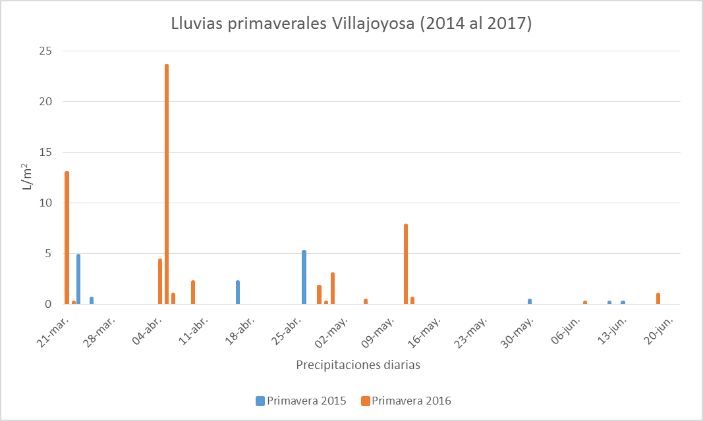
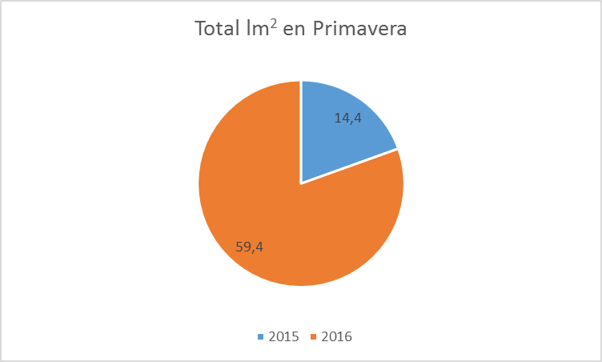

Tabla y gráfico de las lluvias recogidas durante el periodo primaveral durante los años 2014, 2015, 2016 y 2017.
| Primavera | l/m2 2014 | l/m2 2015 | l/m2 2016 | l/m2 2017 |
|---|---|---|---|---|
| 20-mar | sin datos | 0,8 | 0 | sin datos |
| 21-mar | sin datos | 0 | 13 | sin datos |
| 22-mar | sin datos | 0 | 0,2 | sin datos |
| 23-mar | sin datos | 4,8 | 0 | sin datos |
| 24-mar | sin datos | 0 | 0 | sin datos |
| 25-mar | sin datos | 0,6 | 0 | sin datos |
| 26-mar | sin datos | 0 | 0 | sin datos |
| 27-mar | sin datos | 0 | 0 | sin datos |
| 28-mar | sin datos | 0 | 0 | sin datos |
| 29-mar | sin datos | 0 | 0 | sin datos |
| 30-mar | sin datos | 0 | 0 | sin datos |
| 31-mar | sin datos | 0 | 0 | sin datos |
| 01-abr | sin datos | 0 | 0 | sin datos |
| 02-abr | sin datos | 0 | 0 | sin datos |
| 03-abr | sin datos | 0 | 0 | sin datos |
| 04-abr | sin datos | 0 | 4,4 | sin datos |
| 05-abr | sin datos | 0 | 23,6 | sin datos |
| 06-abr | sin datos | 0 | 1 | sin datos |
| 08-abr | sin datos | 0 | 0 | sin datos |
| 09-abr | sin datos | 0 | 2,2 | sin datos |
| 10-abr | sin datos | 0 | 0 | sin datos |
| 11-abr | sin datos | 0 | 0 | sin datos |
| 12-abr | sin datos | 0 | 0 | sin datos |
| 13-abr | sin datos | 0 | 0 | sin datos |
| 14-abr | sin datos | 0 | 0 | sin datos |
| 15-abr | sin datos | 0 | 0 | sin datos |
| 16-abr | sin datos | 2,2 | 0 | sin datos |
| 17-abr | sin datos | 0 | 0 | sin datos |
| 19-abr | sin datos | 0 | 0 | sin datos |
| 20-abr | sin datos | 0 | 0 | sin datos |
| 21-abr | sin datos | 0 | 0 | sin datos |
| Primavera | l/m2 2014 | l/m2 2015 | l/m2 2016 | l/m2 2017 |
|---|---|---|---|---|
| 22-abr | sin datos | 0 | 0 | sin datos |
| 23-abr | sin datos | 0 | 0 | sin datos |
| 24-abr | sin datos | 0 | 0 | sin datos |
| 25-abr | sin datos | 0 | 0 | sin datos |
| 26-abr | sin datos | 5,2 | 0 | sin datos |
| 27-abr | sin datos | 0 | 0 | sin datos |
| 28-abr | sin datos | 0 | 1,8 | sin datos |
| 29-abr | sin datos | 0 | 0,2 | sin datos |
| 30-abr | sin datos | 0 | 3 | sin datos |
| 01-may | sin datos | 0 | 0 | sin datos |
| 02-may | sin datos | 0 | 0 | sin datos |
| 03-may | sin datos | 0 | 0 | sin datos |
| 04-may | sin datos | 0 | 0 | sin datos |
| 05-may | sin datos | 0 | 0,4 | sin datos |
| 06-may | sin datos | 0 | 0 | sin datos |
| 07-may | sin datos | 0 | 0 | sin datos |
| 08-may | sin datos | 0 | 0 | sin datos |
| 09-may | sin datos | 0 | 0 | sin datos |
| 10-may | sin datos | 0 | 0 | sin datos |
| 11-may | sin datos | 0 | 7,8 | sin datos |
| 12-may | sin datos | 0 | 0,6 | sin datos |
| 13-may | sin datos | 0 | 0 | sin datos |
| 14-may | sin datos | 0 | 0 | sin datos |
| 15-may | sin datos | 0 | 0 | sin datos |
| 16-may | sin datos | 0 | 0 | sin datos |
| 17-may | sin datos | 0 | 0 | sin datos |
| 18-may | sin datos | 0 | 0 | sin datos |
| 19-may | sin datos | 0 | 0 | sin datos |
| 20-may | sin datos | 0 | 0 | sin datos |
| 21-may | sin datos | 0 | 0 | sin datos |
| 22-may | sin datos | 0 | 0 | sin datos |
| Primavera | l/m2 2014 | l/m2 2015 | l/m2 2016 | l/m2 2017 |
|---|---|---|---|---|
| 23-may | sin datos | 0 | 0 | sin datos |
| 24-may | sin datos | 0 | 0 | sin datos |
| 25-may | sin datos | 0 | 0 | sin datos |
| 26-may | sin datos | 0 | 0 | sin datos |
| 27-may | sin datos | 0 | 0 | sin datos |
| 28-may | sin datos | 0 | 0 | sin datos |
| 29-may | sin datos | 0 | 0 | sin datos |
| 30-may | sin datos | 0,4 | 0 | sin datos |
| 31-may | sin datos | 0 | 0 | sin datos |
| 01-jun | sin datos | 0 | 0 | sin datos |
| 02-jun | sin datos | 0 | 0 | sin datos |
| 03-jun | sin datos | 0 | 0 | sin datos |
| 04-jun | sin datos | 0 | 0 | sin datos |
| 05-jun | sin datos | 0 | 0 | sin datos |
| 06-jun | sin datos | 0 | 0 | sin datos |
| 07-jun | sin datos | 0 | 0,2 | sin datos |
| 08-jun | sin datos | 0 | 0 | sin datos |
| 09-jun | sin datos | 0 | 0 | sin datos |
| 10-jun | sin datos | 0 | 0 | sin datos |
| 11-jun | sin datos | 0,2 | 0 | sin datos |
| 12-jun | sin datos | 0 | 0 | sin datos |
| 13-jun | sin datos | 0,2 | 0 | sin datos |
| 14-jun | sin datos | 0 | 0 | sin datos |
| 15-jun | sin datos | 0 | 0 | sin datos |
| 16-jun | sin datos | 0 | 0 | sin datos |
| 17-jun | sin datos | 0 | 0 | sin datos |
| 18-jun | sin datos | 0 | 1 | sin datos |
| 19-jun | sin datos | 0 | 0 | sin datos |
| 20-jun | sin datos | 0 | 0 | sin datos |
| 21-jun | sin datos | 0 | 0 | sin datos |
Fuente:https://datosclima.es/Aemet2013/Precipitacion2013.php

Fuente: Elaboración propia a partir datos Aemet.
En este gráfico se puede observar

Fuente: propia a partir datos Aemet.
En el gráfico anterior se puede observar.....